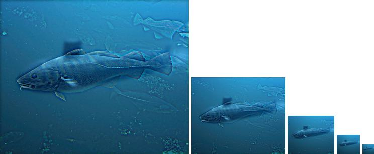
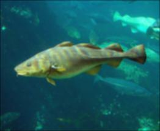
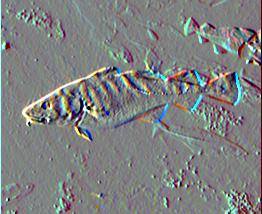
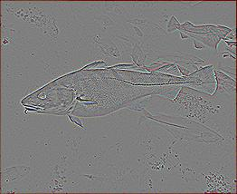
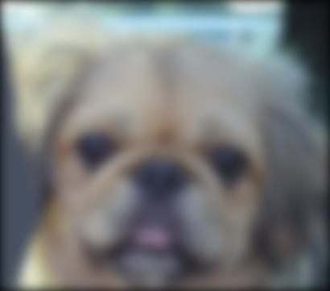
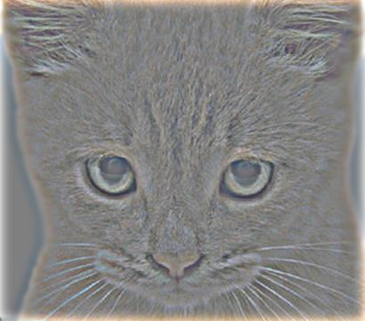
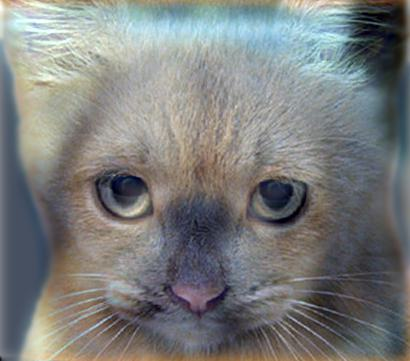
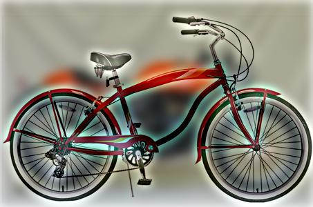
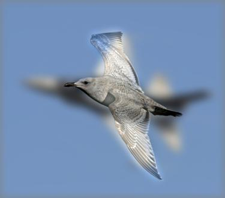
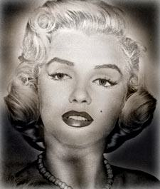

Hybrid images: one picture up close, another from afar
I wrote image convolution from scratch, first as a plain NumPy loop and then as a PyTorch model, and used it to blend the blurry shapes of one photo with the sharp edges of another. The result is a single image that changes what it shows depending on how far away you stand.
The 30-second version
- Built: a convolution engine from scratch (first in NumPy, then in PyTorch) and used it to make hybrid images: pictures that read as one thing up close and another from across the room.
- How: keep only the blurry, low-frequency part of one photo, only the sharp edges of another, and add them together.
- Result: five hybrids (dog → cat, bicycle → motorcycle, bird → plane, Marilyn → Einstein, fish → submarine). The PyTorch version made them about 3.5× faster than my hand-written loop.
Two pictures in one
Your eye reads fine detail when it is close to a picture and only the broad shapes when it is far away. A hybrid image exploits that: up close you see the sharp edges of one image, and as you step back (or the picture shrinks) those edges disappear and a second, blurrier image takes over.

Writing convolution by hand
Everything here runs on one operation: sliding a small grid of weights (a filter or kernel) across the image and replacing every pixel with the weighted sum of its neighbours. I wrote that from scratch in NumPy: pad the image so the filter fits at the borders, then loop over every pixel and every colour channel.
Build a Gaussian kernel
A 2D bell curve, built as the outer product of two 1D Gaussians and normalised to sum to 1, so blurring never brightens or darkens the image.
Pad, then slide
Zero-pad by half the kernel size on each side so the output is the same size as the input, then take the weighted sum at every position.
Test it on known filters
An identity filter should change nothing, a box filter should blur, a Sobel filter should light up vertical edges and a Laplacian should keep only fine detail. All four behaved, which is how I knew the convolution was right.

Box blur
Sobel (edges)
Laplacian (detail)Making the hybrids
A hybrid is two filtering operations and an addition. Blur image A with a Gaussian to keep its low frequencies. Blur image B the same way and subtract that from B, which leaves only its high frequencies. Add the two and clip back into the valid pixel range.
low = conv2d(image_a, gaussian) # broad shapes of A high = image_b - conv2d(image_b, gaussian) # edges of B hybrid = clip(low + high, 0, 1)
The one real decision is the cutoff frequency, the width of the Gaussian. Too small and image A bleeds through up close; too large and image B never appears. Most pairs worked at a cutoff of 7; Marilyn and Einstein needed 13 and the fish and submarine only 3, because their outlines were so different in size.

Low frequencies (dog)
High frequencies (cat)
The hybrid
Bicycle / motorcycle
Bird / plane
Marilyn / EinsteinDoing it again in PyTorch
Then we rebuilt the same pipeline as a PyTorch model and dataset: the Gaussian becomes a fixed convolution layer and the images are loaded as tensors in batches. Same pictures out, far less waiting.
The last part was making sure I really understood PyTorch's conventions: how stride and padding change the output size (a 3×3 filter on a 5×5 image gives 3×3 with no padding, 5×5 with one pixel of padding) and how a bank of 12 filters turns a 3-channel image into 12 feature maps. Those shape rules come back in every deep-learning project after this one.
What it taught me
- Test with filters you can predict. An identity filter that changes nothing is the fastest bug detector there is.
- Loops are for understanding, libraries are for running. Writing convolution by hand taught me what it is; PyTorch made it 3.5× faster in a handful of lines.
- One parameter can be the whole craft. The algorithm took an afternoon. Choosing a cutoff per image pair is what made the hybrids actually work.
Key terms
- convolution
- Sliding a small weight grid over an image and taking a weighted sum at every position.
- Gaussian kernel
- A bell-shaped filter that blurs smoothly; its width sets how much detail is removed.
- low / high frequencies
- Broad, slowly-changing shapes vs. sharp edges and fine texture.
- cutoff frequency
- How wide the Gaussian is: where "low" ends and "high" begins.
- Sobel / Laplacian
- Classic edge filters: Sobel finds edges in one direction, the Laplacian finds fine detail in all directions.